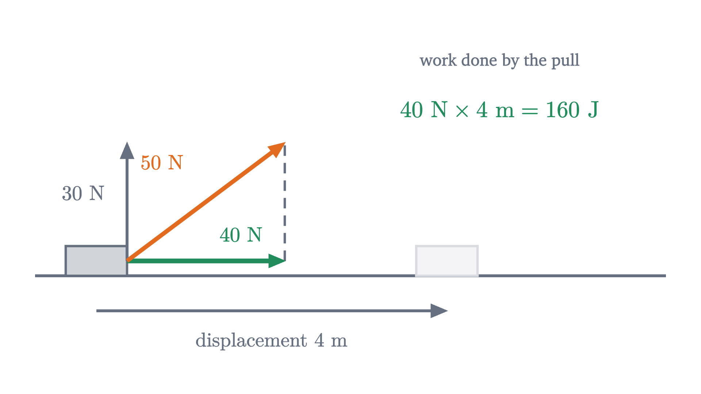
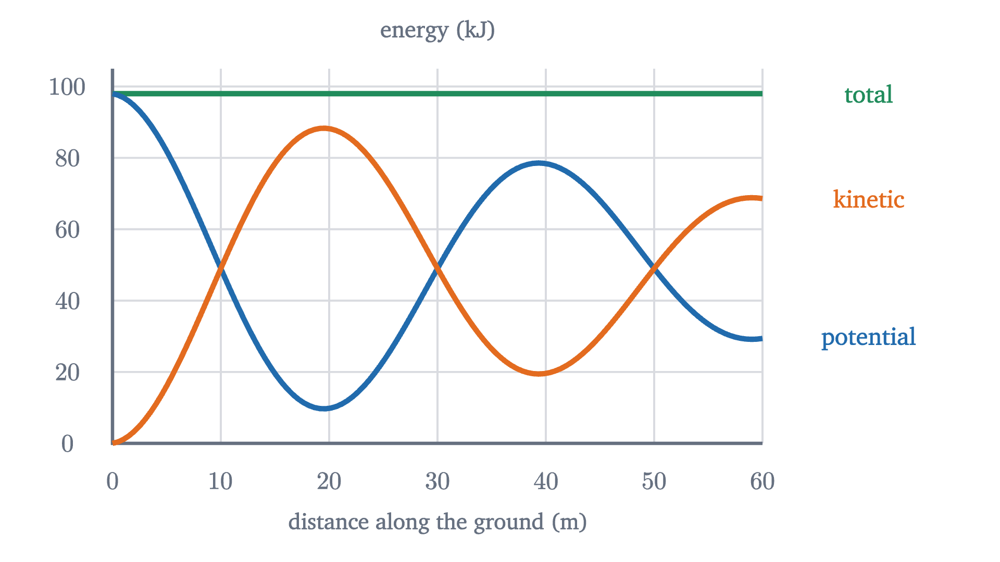
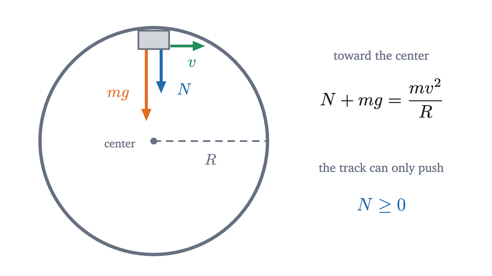

Conservation of energy: a roller coaster's bookkeeping
Work, kinetic and potential energy, and the work-energy theorem, derived from F = ma and used to find a coaster's speed anywhere and the height a loop needs.
AssumesNewton's second law, F = ma: what force really doesPosition, velocity and acceleration: reading motion graphs
A roller coaster cart is released from rest at the top of a 20 m drop. How fast is it going at the bottom of the first valley, and does it have enough speed to get over the next hill?
Newton’s second law can answer this in principle. In practice the slope of the track is different at every point, so the cart’s acceleration changes continuously, and the constant-acceleration equations never apply for more than an instant. Yet the answer is easy, and it does not depend on the shape of the track at all: only on how far the cart has descended. This lesson finds the quantity that makes that true.
A clue: three ramps of the same height
Start with something we can solve. A block slides from rest down a frictionless ramp that is 5 m high and tilted at $30°$. From the lesson on Newton’s second law, its acceleration along the ramp is $a = g\sin\theta = 9.8 \times 0.5 = 4.9$ m/s², where $g = 9.8$ m/s². The ramp’s length is $L = 5/\sin 30° = 10$ m. For constant acceleration from rest, $v^2 = 2aL$, so $v^2 = 2 \times 4.9 \times 10 = 98$ and $v = 9.9$ m/s at the bottom.
Pause and try
Repeat the calculation for a steeper ramp of the same height: 5 m high, tilted at $60°$. Before you compute, guess whether the block arrives faster, slower, or at the same speed. Then do the case of a straight 5 m drop.
Show answerHide answer
At $60°$: $a = 9.8\sin 60° = 8.49$ m/s² and $L = 5/\sin 60° = 5.77$ m, so $v^2 = 2 \times 8.49 \times 5.77 = 98$, and $v = 9.9$ m/s again. Straight drop: $v^2 = 2 \times 9.8 \times 5 = 98$. The steeper the ramp, the larger the acceleration and the shorter the distance, and the two effects cancel exactly.
In every case $v^2 = 2gh$, with $h$ the height descended. The route changed the time taken and left the final speed alone. Something is being traded, height for speed squared, at a fixed rate of exchange. To find out what, we need a way to measure what a force accomplishes over a distance.
Work: force along the motion, times distance
Take the $30°$ ramp again and multiply both sides of $v^2 = 2aL$ by half the block’s mass $m$:
On the right, $ma$ is the net force along the ramp, and $L$ is the distance moved along the ramp. The product of a force and the distance moved in the force’s direction is called the work done by the force. The left side is what the block got for it.
Usually a force is not lined up with the motion. Pull a sled along level snow with a rope that slants upward, and only part of your pull moves the sled along; the rest just lifts a little of its weight off the snow. The second law tells us which part matters: the acceleration along the ground comes from the component of force along the ground.

The second formula is the first in different clothes. Point the $x$ axis along the displacement, so that $\vec d = (d, 0)$ and $\vec F = (F\cos\phi, F\sin\phi)$; then $F_x\Delta x + F_y\Delta y = F d\cos\phi$. The combination $F_x\Delta x + F_y\Delta y$ is called the dot product of the two vectors, written $\vec F \cdot \vec d$, and its value does not depend on which perpendicular axes you choose (the lesson on the dot product proves this). For the sled, $\vec F = (40, 30)$ N and $\vec d = (4, 0)$ m, so $W = 40 \times 4 + 30 \times 0 = 160$ J.
Work is a number with a sign, and three cases are worth separating. A force with a component along the motion ($\phi < 90°$) does positive work. A force perpendicular to the motion ($\phi = 90°$) does zero work, however large it is: the normal force from a frictionless track is always of this kind. A force with a component against the motion ($\phi > 90°$) does negative work, and kinetic friction is the standard example, with $\phi = 180°$ and $W = -f d$.
The work-energy theorem
The ramp calculation suggested that the net work on an object shows up as a change in $\tfrac12 mv^2$. That is true in general.
If the forces change along the way, cut the path into short pieces on which they are nearly constant, apply the theorem to each piece, and add. The kinetic energy changes telescope, leaving the final minus the initial, and the works add up to the total work. Making “nearly constant” exact is a limit argument that belongs to integral calculus; here it is a sketch, and for any path made of straight segments with constant forces on each, such as a track built from ramps, the result is fully proved.
Notice what the theorem does not contain: time. It connects speeds to positions directly.
Gravity’s work depends only on the change in height
Now look at the work done by gravity. The weight is the constant force $(0, -mg)$, taking $y$ upward. For any displacement $(\Delta x, \Delta y)$,
The horizontal part of the displacement does not appear. Sliding down a ramp, falling straight, or following any chain of straight segments from height $y_i$ to height $y_f$, gravity does the same total work, $mg(y_i - y_f)$, because the $\Delta y$’s of the segments add up to $y_f - y_i$ regardless of how the path wanders.
Because the work depends only on the two heights, we can keep accounts with a single function of position.
The reference level is arbitrary. Raising it by 10 m lowers every $U$ by the same amount, and only differences of $U$ ever enter a calculation.
This is the bookkeeping the roller coaster obeys. Divide $\tfrac12 mv_f^2 + mgy_f = \tfrac12 mv_i^2 + mgy_i$ by $m$ and solve:
The mass has cancelled, so a loaded cart and an empty one have the same speed at every point, and the shape of the track does not appear, which explains the three ramps.
Pause and try
The cart in the opening animation starts from rest at 20 m. The floor of the first valley is 2 m high and the top of the next hill is 16 m high. Find the cart’s speed at each, and its kinetic and potential energy there, given that its mass is 500 kg.
Show answerHide answer
Total energy: $E = mgy = 500 \times 9.8 \times 20 = 98\,000$ J $= 98$ kJ, all potential at the start. Valley: $U = 500 \times 9.8 \times 2 = 9.8$ kJ, so $K = 88.2$ kJ, and $v = \sqrt{2 \times 9.8 \times 18} = 18.8$ m/s. Hilltop: $U = 78.4$ kJ, $K = 19.6$ kJ, $v = \sqrt{2 \times 9.8 \times 4} = 8.9$ m/s. The cart clears the hill with speed to spare. It could not clear any hill higher than 20 m, where $K$ would have to be negative.

With friction, mechanical energy is not conserved
Real tracks resist. Suppose a resisting force of constant size $f$ acts on the cart, always directed against its motion. Over a path of length $s$ it does work $-fs$, and the work-energy theorem now reads $K_f - K_i = (U_i - U_f) - fs$, that is,
The mechanical energy drops by the force times the distance travelled. Two things are different from gravity. The work is always negative, whichever way the cart moves. And it depends on the length of the route taken, so no “friction potential energy” can be defined: a longer path between the same two points loses more.
In the animation the cart has travelled about 51 m of track when it stops, so it has lost $400 \times 51 \approx 20$ kJ of its 98 kJ, and what remains, about 78 kJ, is the potential energy of a 500 kg cart 15.8 m up. The top of the hill is at 16 m. Without resistance it cleared that hill at 8.9 m/s.
The lost 20 kJ has not vanished. The rubbing surfaces and the air are warmer, and careful measurement (first done by James Joule in the 1840s) shows that the thermal energy gained equals the mechanical energy lost. The statement that the total of all forms of energy is constant is the law of conservation of energy, also called the first law of thermodynamics. We are citing it, and it cannot be derived from Newton’s laws alone: it is an experimental law that reaches well beyond mechanics. What we have proved is the mechanical part: $E$ is constant when only gravity does work, and falls by $fs$ under a resisting force $f$.
Worked examples
The loop-the-loop
A frictionless track comes down a hill and then turns through a vertical circular loop of radius $R$. A cart is released from rest at height $h$ above the bottom of the loop, and it is not attached to the track: it can press on the track but the track cannot pull it. How large must $h$ be for the cart to get all the way round?
Pause and try
The top of the loop is at height $2R$. Is $h = 2R$ enough? Argue from energy, and then ask what the cart would be doing at the top.
Show answerHide answer
Energy conservation allows it: released from $2R$, the cart can reach height $2R$, with zero kinetic energy left. But then it would be at the top of the loop, upside down, at rest, and a cart at rest under a track simply falls. Having enough energy to reach a height is a necessary condition and does not guarantee that the track can steer the cart there.
To see what else is needed, look at the forces at the top of the loop. We need one fact about circular motion, derived in the lesson on circular motion and orbits: an object moving at speed $v$ on a circle of radius $R$ has an acceleration of magnitude $v^2/R$ directed toward the center.

The extra $\tfrac12 R$ of height above the top of the loop buys exactly the kinetic energy $\tfrac12 mv^2 = \tfrac12 mgR$ that the cart needs there. The mass cancels again, and $h/R$ is a pure number, as a ratio of two lengths must be.
Limits and common mistakes
Energy conservation gives speeds from heights, and it is silent about time and direction. The three blocks at the start had equal final speeds and unequal travel times, and to get the times we needed the second law. The loop shows the same limitation from another side: energy said the cart could reach $2R$, and only the force analysis showed it would not.
The formula $U = mgy$ assumes a constant weight, so it holds near the Earth’s surface and fails for a satellite. The loop result assumes a sliding point cart; a small solid ball that rolls without slipping also has energy of rotation and needs a higher start, $h = 2.7R$.
Check yourself
A ball is dropped from a window. A second, identical ball starts from rest at the same height and slides down a frictionless curved chute to the ground. Neglecting air resistance, how do their speeds at ground level compare?
The next lesson finds a second conserved quantity, momentum, which stays constant in collisions even when mechanical energy does not.
Problems
Use $g = 9.8$ m/s². State the reference level for potential energy in each solution.
Problem 1
A 20 kg crate at rest on a level floor is pushed 6 m by a horizontal 80 N force, against a friction force of 50 N. Find the work done by each force on the crate and its final speed.
Show solutionHide solution
Push: $80 \times 6 = +480$ J. Friction: $-50 \times 6 = -300$ J. Weight and normal force: perpendicular to the motion, 0 J each. Net work: $+180$ J. Work-energy theorem: $\tfrac12(20)v^2 = 180$, so $v^2 = 18$ and $v = 4.2$ m/s. Check: net force 30 N gives $a = 1.5$ m/s² and $v^2 = 2(1.5)(6) = 18$.
Problem 2
A ball is thrown from a balcony 3 m above the ground at 4 m/s. Find its speed just before it reaches the ground if it is thrown (a) straight down, (b) straight up, (c) horizontally. Neglect air resistance.
Show solutionHide solution
Reference level: the ground. Only gravity does work, so $\tfrac12 mv_f^2 = \tfrac12 mv_i^2 + mg(3)$ in all three cases, because the conservation equation contains the initial speed and not its direction. $v_f = \sqrt{4^2 + 2(9.8)(3)} = \sqrt{74.8} = 8.6$ m/s for (a), (b) and (c). The three throws differ in the time taken and in the direction of the final velocity.
Problem 3
The lesson’s coaster cart is released from rest at 20 m on the frictionless track. How fast is it moving at a point where the track is 12 m high? Does the answer depend on whether it is on the way down into the valley or on the way up the next hill?
Show solutionHide solution
Reference level: the ground. $v = \sqrt{2g(y_i - y)} = \sqrt{2 \times 9.8 \times 8} = \sqrt{156.8} = 12.5$ m/s. The speed depends only on the height, so it is 12.5 m/s at every point of the track that is 12 m high, going down or going up. The direction of the velocity differs.
Problem 4
A pendulum bob hangs on a 1.5 m string. It is pulled aside until the string makes $40°$ with the vertical and released from rest. Find its speed at the lowest point, and explain why the string’s tension can be ignored in the energy equation.
Show solutionHide solution
Reference level: the lowest point. At $40°$ the bob is below the pivot by $1.5\cos 40° = 1.149$ m, so it is $h = 1.5 - 1.149 = 0.351$ m above the lowest point. The tension points along the string, and the bob moves along a circle centered on the pivot, so the tension is perpendicular to the velocity at every instant and does no work. Only gravity does work: $\tfrac12 mv^2 = mgh$, and $v = \sqrt{2 \times 9.8 \times 0.351} = 2.6$ m/s.
Problem 5
A 70 kg skier starts from rest at the top of a hill 30 m high and reaches the bottom, after 120 m of slope, moving at 18 m/s. How much mechanical energy was lost, and what was the average resisting force?
Show solutionHide solution
Reference level: the bottom. $E_i = mgh = 70 \times 9.8 \times 30 = 20\,580$ J. $E_f = \tfrac12(70)(18)^2 = 11\,340$ J. Lost: $9240$ J. From $E_f = E_i - fs$: $f = 9240/120 = 77$ N on average. Without resistance the skier would have arrived at $\sqrt{2 \times 9.8 \times 30} = 24.2$ m/s.
Problem 6
A car moving at speed $v$ on a level road brakes with locked wheels; the coefficient of kinetic friction between tires and road is $\mu_k$. Use the work-energy theorem to find the stopping distance. Evaluate it for $v = 25$ m/s and $\mu_k = 0.7$, and say what happens to it when the speed doubles.
Show solutionHide solution
On a level road $N = mg$, so the friction force is $\mu_k mg$ and its work over a distance $d$ is $-\mu_k mg\,d$. The weight and normal force do no work. Work-energy: $0 - \tfrac12 mv^2 = -\mu_k mg\,d$, so $d = \dfrac{v^2}{2\mu_k g}$. For the numbers given, $d = 625/(2 \times 0.7 \times 9.8) = 45.6$ m. Doubling $v$ multiplies $d$ by four: the car has four times the kinetic energy, and friction removes it at the same number of joules per meter.
Problem 7
A cart is released from rest at height $h = 3R$ above the bottom of a frictionless loop of radius $R$. Find the normal force on it, as a multiple of its weight, at the top of the loop and at the bottom.
Show solutionHide solution
Reference level: the bottom of the loop. Top: $v^2 = 2g(3R - 2R) = 2gR$. Toward the center (down): $N + mg = mv^2/R = 2mg$, so $N = mg$. Bottom: $v^2 = 2g(3R) = 6gR$. Here the center is above the cart; toward the center (up): $N - mg = mv^2/R = 6mg$, so $N = 7mg$. A rider feels pressed into the seat with seven times their weight at the bottom, which is why real coaster loops are not circles.
Problem 8
For a frictionless loop of radius $R$, let the cart be at the point of the loop whose radius makes angle $\alpha$ with the upward vertical (so $\alpha = 0$ is the top). (a) Show that $N = \dfrac{mv^2}{R} - mg\cos\alpha$ there. (b) Show that if $N \ge 0$ at the top, then $N \ge 0$ at every point of the loop. (c) If the cart is released from $h = 2R$, at what height does it leave the track?
Show solutionHide solution
(a) The point is at height $R + R\cos\alpha$ above the bottom. The forces are the normal force $N$, toward the center, and the weight, whose component toward the center is $mg\cos\alpha$ (the whole weight at the top, none at the side where $\alpha = 90°$, and directed away from the center in the lower half, where $\cos\alpha < 0$). The second law toward the center: $N + mg\cos\alpha = mv^2/R$. (b) Energy conservation gives $v^2 = 2g(h - R - R\cos\alpha)$, so
This is smallest where $\cos\alpha$ is largest, at $\alpha = 0$, the top. So if $N \ge 0$ at the top, it is at least as large everywhere else. (c) With $h = 2R$: $N = mg(2 - 3\cos\alpha)$, which reaches zero when $\cos\alpha = \tfrac23$. The height there is $R + \tfrac23 R = \tfrac53 R$. For the 4 m loop in the lesson’s figure that is 6.7 m. From that point on the cart is a projectile.